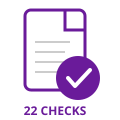
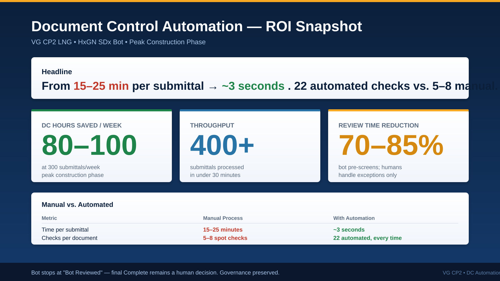

Per submittal for manual review. At 300+ submittals/week during peak construction, this overwhelms the DC team.
Manual spot checks per document. Critical issues like revision mismatches, wrong contracts, or missing security classifications slip through.
Scanned/image-only PDFs pass unchecked. No automated way to verify text is searchable or metadata matches the loadsheet.
Automated validation of document format, file integrity, blank pages, orientation, and completeness
Doc Number, Revision, Title, Discipline, Issue Purpose, Security Classification, Issue Date
Cross-check every field against the Load Sheet and Datasheet using deterministic rules
Cross-page consistency analysis — catches hidden mismatches buried on inner pages
Identifies non-standard document templates and flags deviations from project standards
Detects draft watermarks, reviewer markups, missing signatures, wrong project references
AI vision reads every page — extracts text from scanned/image-only PDFs, verifies searchability
Complete metadata, signatures, revision history, security classification. All 22+ checks pass. Auto-approved.
Image-only pages detected on pages 2-3. No searchable text layer. Missing security classification. Error report PDF generated.
Reviewer markups found: [COMMENT], [MARKUP], /Annots annotations embedded in page 3. Must be removed before submission.
DRAFT watermark, wrong project ("Cameron LNG"), Rev 0+AFC mismatch, revision inconsistency (Rev 0 vs Rev 4 across pages), missing security class, date mismatch.

| Metric | Manual | Automated |
|---|---|---|
| Time per submittal | 15-25 min | ~3 seconds |
| Checks per document | 5-8 spot checks | 22+ automated |
| OCR validation | None | AI-powered, every page |
| Cross-page consistency | Rarely checked | Every field, every page |
| Error report | Email/verbal | PDF with highlights |
| Audit trail | Manual log | Screenshots + video |
Load API credits, run full end-to-end validation against all 5 test documents. Verify OCR accuracy on real project PDFs.
Replace mimic app with real HxGN SDx API endpoints. Configure bot credentials and network access for the production SDx instance.
Deploy as a scheduled service (cron/Windows Task Scheduler). Configure polling interval, retry logic, and alerting for failures.
Auto-email error report PDFs to contractors when documents are rejected. Integrate with notification workflows.
Extend validation rules for all discipline codes. Add support for non-PDF formats (DWG, XLS). Train AI on project-specific templates.
Real-time dashboard showing submission rates, pass/fail trends, contractor compliance scores, and bottleneck identification.